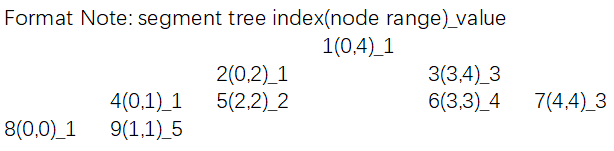

Segment Tree

Segment Tree
Segment Tree is used in cases where there are multiple range queries on array and modifications of elements of the same array. For example, finding the sum of all the elements in an array from indices L to R, or finding the minimum (famously known as Range Minumum Query problem) of all the elements in an array from indices L to R.
Problem:
Description of Range Minimum Query
Given an array A of size N, there are two types of queries on this array.
1 qlr: In this query you need to print the minimum in the sub-array A[l:r].
2 uxy: In this query you need to update A[x]=y.
Input:
First line of the test case contains two integers, N and Q, size of array A and number of queries.
Second line contains N space separated integers, elements of A.
Next Q lines contain one of the two queries.
Output:
For each type 1 query, print the minimum element in the sub-array A[l:r].
Contraints:
1<=N,Q,y<=10^5
1<=l,r,x<=N
SAMPLE INPUT
5 5
1 5 2 4 3
q 1 5
q 1 3
q 3 5
u 3 6
q 1 5
SAMPLE OUTPUT
1
1
2
1
Segment Tree Layout

Code Implementation
Main
1
2
3
4
5
6
7
8
9
10
11
12
13
14
15
16
17
18
19
20
21
22
23
24
25
26
27
28
29
30
31
32
33
34
35
36
37
38
39
40
41
42
43
44
45
46
47
48
49
50
51
52
53
54
55
56
57
58
59
60
61
62
63
64
65
66
67
68
69
70
71
72
73
74
75
76
77
78
79
80#include <limits.h>
#include <stdio.h>
int Power2RoundUp(int size)
{
int cnt = 0;
do {
cnt++;
size = (size >> 1);
} while (size > 0);
return (1 << (cnt + 1));
}
void PrintfSegTree(int *st, int size, int init)
{
int i;
printf("----------\n");
for (i = 0; i < size; i++) {
if (st[i] != init) {
printf("%d: %d\n", i, st[i]);
}
}
}
// Write your code here
int main()
{
int i;
int size, roundUp, opts;
int *arr, *st;
char opt;
int x, y;
scanf("%d %d\n", &size, &opts);
if (size <= 0) {
return 0;
}
roundUp = Power2RoundUp(size);
arr = malloc(sizeof(int) * size);
st = malloc(sizeof(int) * roundUp);
if (!arr || !st) {
return 0;
}
i = 0;
while ((++i) <= size && (scanf("%d", &arr[i - 1]) != EOF)) {
}
for (i = 0; i < roundUp; i++) {
st[i] = INT_MAX;
}
ConstructSegTree(st, arr, size);
//PrintfSegTree(st, roundUp, INT_MAX);
i = 0;
while ((++i) <= opts && (scanf("\n%c %d %d", &opt, &x, &y) != EOF)) {
int target;
switch (opt) {
case 'q':
target = INT_MAX;
QuerySegTree(st, 1, 0, size - 1, x - 1, y - 1, &target);
printf("%d\n", target);
break;
case 'u':
//PrintfSegTree(st, roundUp, INT_MAX);
UpdateSegTree(st, 1, 0, size - 1, x - 1, y);
//PrintfSegTree(st, roundUp, INT_MAX);
break;
}
}
free(arr);
free(st);
return 0;
}Construct
1
2
3
4
5
6
7
8
9
10
11
12
13
14
15
16
17void _Construct(int *st, int sti, int *arr, int l, int r)
{
if (l == r) {
st[sti] = arr[l];
return;
}
_Construct(st, 2 * sti, arr, l, (l + r) / 2);
_Construct(st, 2 * sti + 1, arr, (l + r) / 2 + 1, r);
st[sti] = st[2 * sti] < st[2 * sti + 1] ? st[2 * sti] : st[2 * sti + 1] ;
}
void ConstructSegTree(int *st, int *arr, int size)
{
_Construct(st , 1, arr, 0, size - 1);
}Update
1
2
3
4
5
6
7
8
9
10
11
12
13
14
15
16void UpdateSegTree(int *st, int sti, int l, int r, int idx, int value)
{
if (idx < l || idx > r) { // not in range
return;
}
if (l == r && idx == l) {
st[sti] = value;
return;
}
UpdateSegTree(st, 2 * sti, l, (l + r) / 2, idx, value);
UpdateSegTree(st, 2 * sti + 1, (l + r) / 2 + 1, r, idx, value);
st[sti] = st[2 * sti] < st[2 * sti + 1] ? st[2 * sti] : st[2 * sti + 1];
}Query
1
2
3
4
5
6
7
8
9
10
11
12
13
14
15
16void QuerySegTree(int *st, int sti, int l, int r, int ql, int qr, int *target)
{
if (r < ql || l > qr) { // out query range
return;
}
if (ql <= l && r <= qr) { // in query range
if (st[sti] < *target) {
*target = st[sti];
}
return;
}
QuerySegTree(st, 2 * sti, l, (l + r) / 2, ql, qr, target);
QuerySegTree(st, 2 * sti + 1, (l + r) / 2 + 1, r, ql, qr, target);
}Cautions
– index 0 is ommited of segment tree array